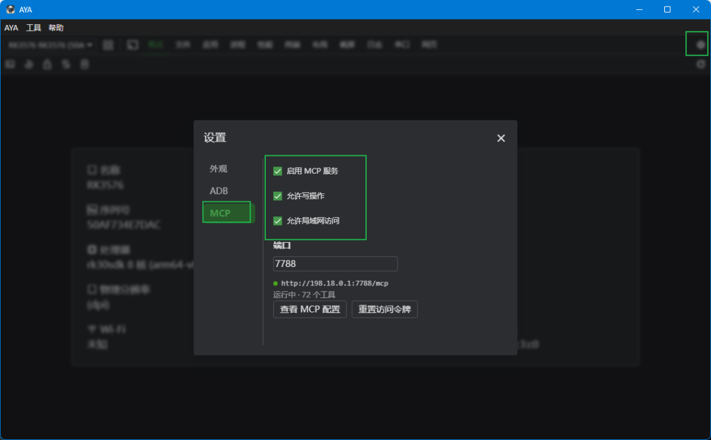

让 AI 直接操控你的 Android 设备
AYA 内置一个只监听 127.0.0.1 的 MCP（Model Context Protocol）服务，把手机能力封装成
73 个 aya_* 工具。在 CodeBuddy、WorkBuddy、Claude
里说一句"打开设置，把字体调到最大并截图"，剩下的交给 AI —— 不用再写脚本、跑命令、粘输出。
同一套面板也支持 带 adb 的 Linux 工控主板（RK3568 / RK3576 · Debian / Ubuntu / Buildroot / Yocto）。
Model Context Protocol
MCP 是什么？为什么手机需要它
MCP 是 AI 客户端与工具之间的开放协议。过去 AI 只能"教你怎么操作手机"，现在它能自己调工具、看结果、再决定下一步——AYA MCP 把 adb 的几十年积累翻译成 73 个标准工具。
会说人话就够了
不用记 adb shell am start -n ...。描述目标，AI 自己选工具、组合调用，失败还会自我纠正。
看得见界面，不只是命令
aya_ui_dump 给带坐标的层级树，aya_screencap 回传截图，AI 既读结构也看画面。
一次调用干完一串动作
aya_batch 串行执行最多 20 个动作，避开播放器控制栏这类 1–3 秒就消失的控件。
Tool Reference
73 个工具，11 个分类
73 个 aya_* 工具：29 个只读默认开放，44 个写需勾选「允许写操作」。下面是最高频的 10 个，
完整清单见 工具清单页。
| 工具 | 权限 | 说明 |
|---|---|---|
aya_ui_dump | 只读 | UI 层级树，节点带 bounds / center，可过滤与分页。 |
aya_tap | 写 | 坐标 / nodeIndex / text·id·desc 定位，点完即回传新界面。 |
aya_text | 写 | 向焦点输入框写文本，中文与 emoji 直接写入。 |
aya_screencap | 只读 | 截图并返回图片，设备端压缩，体积比 PNG 小 436 倍。 |
aya_batch | 写 | 一次串行执行最多 20 个动作，专治 1–3 秒消失的控件。 |
aya_wait_for | 只读 | 等控件出现或消失，命中即返回，比反复 dump 省往返。 |
aya_ui_watch | 只读 | 订阅界面事件，等界面自己动起来，不用盲等。 |
aya_logcat | 只读 | 日志快照，过滤在设备端完成，附崩溃摘要。 |
aya_shell | 写 | adb shell 兜底，30s 超时、输出截断。 |
aya_serial_logs | 只读 | 串口启动日志，支持关键字与增量读取。 |
设备与屏幕 5
先认设备，再截图或取 UI 树。
交互 10
点、滑、按、输、等界面变化。
应用管理 8
列表、启停、清数据、装卸，免 Root。
文件 7
列目录、拉取推送、改名删除。
日志与命令 4
logcat 快照与 adb shell。
串口 11
启动日志按 bootloader/kernel/android 分段。
性能与统计 3
CPU / 内存 / 帧率与工具耗时。
端口映射 3
adb forward / reverse 的增删查。
WebView 调试 9
执行 JS、看 console 与 DOM。
屏幕适配 8
字体、旋转、密度、语言、深色。
录屏与投屏 5
录屏、投屏窗口与画质。
i 是完整树的 DFS 序号（过滤不改变它）；snapshotId 60s 过期，
输入类操作后立即失效，报 STALE_SNAPSHOT 就重新 dump。
Benchmark
同一台设备实测：比 uiautomator2 快 1.7–5 倍
同一台 RK3576 / Android 14、同一界面交替测量（aya 走 MCP 端点、u2 走 Python），每个用例 10–20 次取中位数，方法见 TEST_REPORT 第 8 节。
| 操作 | uiautomator2 | AYA MCP | 差异 |
|---|---|---|---|
| 读取界面层级 | 309 ms / 93 KB | 131 ms / 3.9 KB | 2.35× 快 · 24× 小 |
| 点击（坐标） | 180 ms | 91 ms | 2.0× 快 |
| 滑动（300 ms 动作时长） | 1160 ms | 390 ms | 3.0× 快 |
| 写入文本 | 253–476 ms | 93 ms | 2.7–5.1× 快 |
| 按控件定位点击 | 937 ms | 338 ms | 2.8× 快 |
| 截图 | 145 ms / 6.2 MB PNG | 162 ms / 14 KB JPEG | 体积 436× 小 |
上下文成本差 24 倍
一次层级读取，aya 回 3.9 KB（约 1.2k tokens），u2 回 93 KB（约 30k）。长任务里这比毫秒差距更致命。
少一次模型往返
aya_tap 默认回传点击后的新界面；u2 要 AI 自己写代码、解析 XML，再喂回上下文。
u2 没有的能力
事件订阅、事件驱动等待、串口启动日志、录屏投屏、屏幕适配，共 73 个工具。
Linux Boards
不止 Android：也能接 Linux 工控主板
带 adb 服务的 Debian / Ubuntu / Buildroot / Yocto 主板（RK3568、RK3576 等）接上就能用。平台自动识别， Android 专有功能自动隐藏 —— 不会出现「点了就报错」或「白等 10 秒才失败」。
基础能力开箱可用
终端（adb shell,v2: PTY）、文件 push / pull、进程（带完整命令行）、CPU / 内存 / 温度、
端口转发、串口，全部照常。
日志换成 journalctl / dmesg
有 systemd 走 journalctl -o json，无 systemd 自动回落 dmesg；级别、搜索、暂停
与 aya_logcat、aya_logcat_wait 表现一致。
Android 专有功能自动隐藏
应用管理、布局树、截图录屏、输入注入、投屏、WebView 调试在 Linux 上不存在：面板直接隐藏，对应 MCP 工具
在几十毫秒内返回 NOT_SUPPORTED 并说明原因。
平台自动判定
getprop + /etc/os-release + app_process 综合判断，按设备缓存 5 分钟；
同时插着 Android 与 Linux 板子时，各自按各自的平台走。
| 能力 | 结果 |
|---|---|
| 设备识别 | Ubuntu 22.04.5 LTS · aarch64 · kernel 5.10.160，不再是 undefined |
aya_shell / aya_list_dir |
121 ms / 75 ms |
aya_list_processes |
140 ms，155 个进程 |
aya_performance |
449 ms，4 核 · 39.4 ℃ · 内存 379 / 3902 MB（电量留空） |
aya_logcat（journald） |
128 ms 拉到历史，设备新写一条日志实时命中 |
aya_tap / aya_ui_dump |
57 ms / 48 ms 返回 NOT_SUPPORTED，不再等 10 秒超时 |
| 同进程内另一台 Android 设备 | RK3576 / Android 14：包管理、logcat、性能、进程全部正常 |
Enable MCP
打开 MCP 服务：入口就在设置里
服务由 AYA 桌面端托管，没有命令行、没有额外进程。关掉这个开关，AYA 就回到原版状态。
- 打开「设置」 主界面右上角的齿轮图标，或菜单 工具 → 设置。
- 切到 MCP 分组 弹窗左侧「外观 / ADB / MCP」，点最下面的 MCP。
-
勾选「启用 MCP 服务」
立即在本机启动，默认端口
7788，并自动生成访问令牌。 - 按需放开能力 要点击、输入、shell 就勾「允许写操作」；要跨机连接再勾「允许局域网访问」。

http://198.18.0.1:7788/mcp；只用本机时这里是 127.0.0.1。
| 控件 | 默认 | 作用 |
|---|---|---|
启用 MCP 服务 | 打开 | 总开关，开启即监听本机端口并提供 aya_* 工具。 |
允许写操作 | 按需 | 暴露点击、输入、shell 等 44 个写工具；不勾只有只读工具。 |
允许局域网访问 | 关闭 | 监听地址从 127.0.0.1 变为 0.0.0.0，同网段可连。 |
| 端口 / 令牌 | 7788 | 端口可改；「查看 MCP 配置」复制片段，「重置访问令牌」作废旧令牌。 |
Quick Start
三步，把手机交给 AI
无需 Root，手机上也无需安装任何 App。只要开启 USB 调试 / 无线调试，电脑上跑着 AYA 就行。
开启 MCP 服务
设置 → MCP → 勾选「启用 MCP 服务」，默认端口 7788。需要点击、安装、shell 时再勾「允许写入操作」
（面板截图）。
复制配置片段
弹窗给出三种写好的配置：stdio（推荐）、stdio（无 env）、HTTP。点「复制」，端口与令牌已填好。
粘贴到 AI 客户端
CodeBuddy 粘贴到 ~/.codebuddy/mcp.json；其他 MCP 客户端同理，重连后即可看到
aya_* 工具列表。
// AYA 设置 → MCP → 查看配置，直接复制即可（令牌已填好） { "mcpServers": { "aya": { "type": "stdio", "command": "C:/Path/To/AYA.exe", // 客户端用 AYA 自带的 node 启动桥接脚本 "args": [ "resources/mcp/aya-mcp-stdio.cjs", "--url=http://127.0.0.1:7788/mcp", "--token=<your-token>" ], "env": { "ELECTRON_RUN_AS_NODE": "1", "AYA_MCP_URL": "http://127.0.0.1:7788/mcp", "AYA_MCP_TOKEN": "<your-token>" }, "description": "AYA Android device control" } } }
// 客户端找不到 AYA.exe 时，用系统 node 直接跑桥接脚本 { "mcpServers": { "aya": { "type": "stdio", "command": "node", "args": [ "resources/mcp/aya-mcp-stdio.cjs", "--url=http://127.0.0.1:7788/mcp", "--token=<your-token>" ], "description": "AYA Android device control (no env fallback)" } } }
// HTTP 无状态：切换写权限后需重新 tools/list（或重连） { "mcpServers": { "aya": { "type": "http", "url": "http://127.0.0.1:7788/mcp", "headers": { "Authorization": "Bearer <your-token>" }, "description": "AYA Android device control" } } }
tools/list_changed 会通知客户端热刷新；客户端不支持热更新时重连一次即可。
Use Cases
AI 能替你干这些活
下面每条都是真实可跑的工具组合，把「写脚本 → 运行 → 解析输出」的往返压缩成一句话。
自动化回归与冒烟
"装上新构建，走完登录 → 下单 → 支付，每步截图，失败把 E 级日志带回来。"——aya_install_app → aya_batch → aya_screencap。
UI 走查与适配检查
"把字体缩放到 2.0，逐个页面截图，列出文字被截断的控件。"——aya_set_font_scale + aya_screencap。
崩溃与 ANR 排查
"清一下日志，复现这个操作，把 E 级日志和 tombstone 拉回本机。"——aya_clear_logcat → aya_logcat → aya_pull_file。
复现视频与缺陷留证
"开始录屏，执行刚才那串操作，停录，把 mp4 存到桌面。"——开录 → aya_batch → aya_stop_recording。
性能体检
"滚动首页 30 秒，采样帧率和内存，告诉我掉帧的时段。"——aya_performance + aya_swipe。
H5 / 混合应用调试
"列出前台应用的 WebView，把 devtools 调试地址给我。"——aya_list_webviews 自动 forward 端口并读 /json。
Security
默认收紧，能力给你、风险留给自己可控
MCP 服务跑在你自己的电脑上，设备数据不出本机；危险能力需要你显式授权。
-
只监听 本机或内网：外部网络无法访问，端口 1024–65535，默认 7788。
-
Bearer Token 鉴权：首次开启时生成并持久化，可随时「重置访问令牌」。
-
写操作默认隐藏：44 个写工具需勾选才暴露，29 个只读工具始终可用。
-
Origin 校验 + 2MB 请求体限制：防跨站调用与超大 payload。
-
shell 有兜底：
aya_shell30s 超时、输出截断 20000 字符。
FAQ
常见问题
AYA MCP 和原版 AYA 是什么关系？
基于开源项目 AYA（AGPL-3.0）二次开发， 完整保留原版投屏、文件管理、日志、性能、Shell 等桌面能力，只新增了 MCP 服务层；关掉 MCP 开关就是原版 AYA。
需要 Root 或在手机上安装 App 吗？
都不需要。AYA 走 adb，只需在手机上开启 USB（或无线）调试并授权本机。
客户端只看到 29 个只读工具怎么办？
说明未勾选「允许写入操作」。勾选后重连或等 tools/list_changed 热刷新，即可看到全部 73 个；
目标工具是只读还是写可在 工具清单 里查。
aya_tap 返回 STALE_SNAPSHOT？
快照 60s 过期，输入类操作后立即失效。重新 aya_ui_dump 拿新的 snapshotId 与 nodeIndex 再点。
点开播放器控制栏后读不到控件？
这类控件只停留 1–3 秒。用 aya_tap 默认的 withUi（点完立刻抓一帧），或把「点击 → 等待 → 再点击」合成一次 aya_batch。
MCP 开关打不开，提示端口被占用？
默认 7788 被占。在设置里换一个 1024–65535 的端口重试，设置项会直接显示错误原因。
支持哪些 AI 客户端？
任何支持 MCP 的客户端都可以：CodeBuddy、WorkBuddy、Claude Desktop、Cursor、Cline 等。配置片段在 AYA 设置里一键复制。
MCP 支持局域网或远程访问吗？
默认不支持：服务只监听 127.0.0.1，局域网与公网都连不上。确有跨机需求时，用 SSH 隧道 / frp / ngrok
转发本机端口，开放前务必开启 Bearer Token，且只暴露给可信网络。
支持 Linux 工控主板吗？
支持带 adb 服务的 Debian / Ubuntu / Buildroot / Yocto 主板（RK3568、RK3576 等）。终端、文件、进程、性能、
日志（journalctl / dmesg）、端口转发、串口可用；应用管理、布局树、截图录屏、输入注入、投屏、WebView 调试
依赖 Android 专有命令，在 Linux 上自动隐藏，对应 MCP 工具返回 NOT_SUPPORTED 并说明原因。
AYA MCP 和 Python uiautomator2 有什么区别？该用哪个？
同一台 RK3576 / Android 14 上交替实测：层级 131 ms vs 309 ms、点击 91 vs 180 ms、滑动 390 vs 1160 ms、写文本 93 vs 253–476 ms、截图 14 KB vs 6.2 MB。模型即席操作选 aya；上百步固定回归、要断言与 CI、或要 OCR / 图像处理选 u2。两者争抢同一个设备端无障碍连接，不能同时运行。
What's New
最近更新
本分支在同步上游 AYA 的基础上，围绕「AI 可控 + 桌面体验」持续增强；完整历史见 GitHub Releases。
| 版本 | 改动 |
|---|---|
v2.1.5 |
支持带 adb 的 Linux 工控主板（RK3568 / RK3576 · Debian / Ubuntu / Buildroot / Yocto）：平台自动识别，
概览 / 进程 / 性能按 Linux 适配，新增 journalctl / dmesg 日志后端；Android 专有面板与工具按平台隐藏或返回
NOT_SUPPORTED，并去掉 Linux 设备上每次 10 秒的空等。
|
v2.1.4 |
新增独立的软件更新页面：启动后后台自动检查新版本，主窗口可见时右下角提醒，收进托盘时推送系统通知；支持应用内下载安装包， 实时显示进度并可取消，下载完成后一键安装。 |
v2.1.3 |
注入通道提速：tap / swipe / key / text / screencap 改走常驻 UiAutomation，单次动作从 200–400ms 降到几十毫秒；文本改用
ACTION_SET_TEXT，中文与 emoji 原样写入；截图在设备端压缩透传；新增 aya_ui_watch 无障碍事件订阅，
aya_wait_for 改为事件驱动；官网改版。
|
v2.1.2 |
新增 aya_long_press 与手势注入，aya_batch 支持 gesture 步骤；定位失败返回 nearMatches 与可见性诊断；
短 resource-id 可直接匹配；多窗口节点合并与 visibleOnly 过滤；工具总数 72。
|
v2.1.0 |
新增串口调试面板（bootloader / kernel / android 分段识别、过滤、暂停、波特率探测）与 8 个 aya_serial_* 工具，工具总数 50。 |